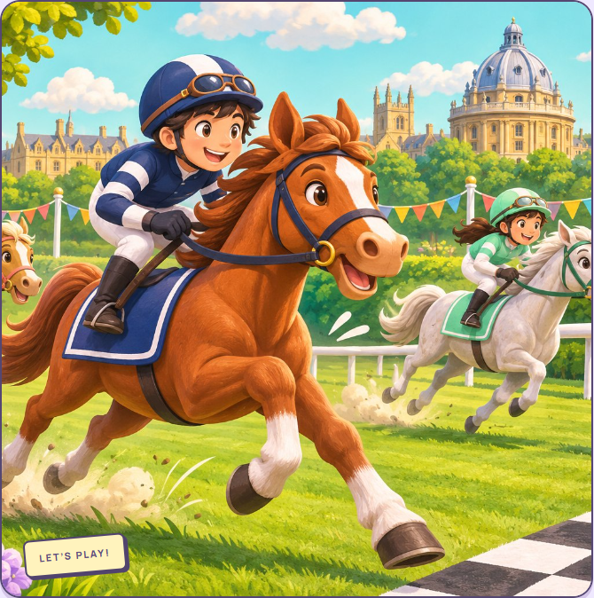
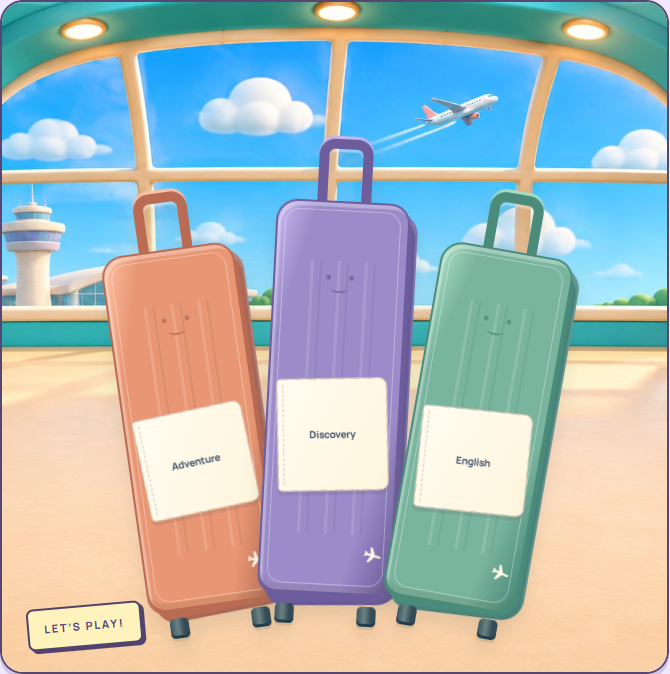
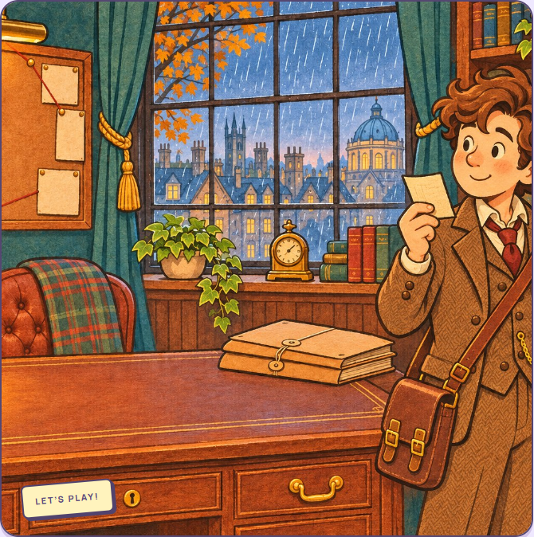
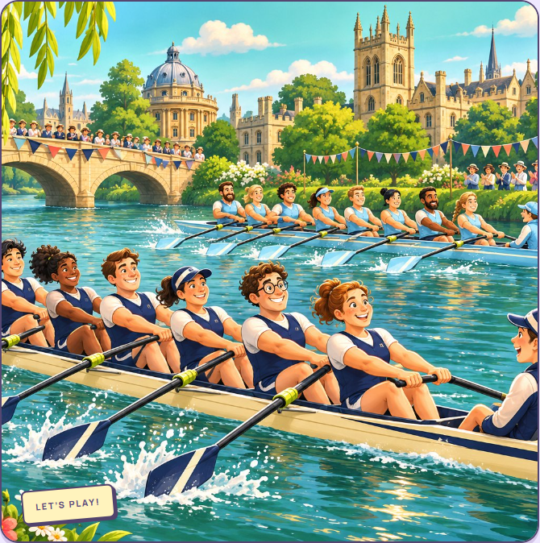

Original Campus adventures
Your next adventure
Four games. Four ways to practise English. Choose your adventure and keep playing.

Grammar Derby
Pick your team. Answer grammar questions and race to the finish.
Grammar · Racing · DEMOPlay
Maletas locas
Read the clue. Send the word to the right suitcase and fill your passport.
Vocabulary · Adventure · DEMOPlay
El detective Owen
Join Owen Pinkerton. Examine the evidence and solve a case in English.
Reading · Deduction · DEMOPlay
Phrasal Regatta
Oxford or Cambridge? Answer phrasal verbs and row your crew to victory.
Phrasal verbs · Racing · DEMOPlay